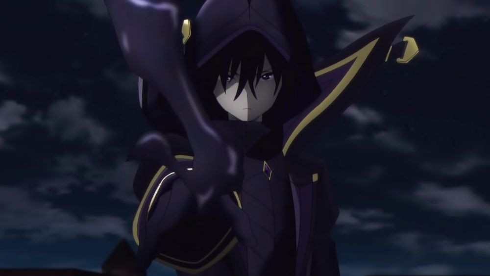

AppearanceCid KagenouCid is a slim young man with a muscular frame, short dark hair, black eyes, and facial features often described as generic and frail. His dark eyes turn red when he performs his Overdrive technique. He also bears a striking resemblance to his previous life, Minoru Kagenō. Attending the Midgar Academy, he wears a compulsory uniform consisting of a dress shirt, trousers, a blazer jacket, a tie, and a pair of loafers. Under his Midgar Pupil attire, he looks like an average student ShadowCid under the alias of Shadow, wears a full Slime Bodysuit, purplish black, with gold accents. This suit covers his entire body and is paired with a domino mask that hides his face, concealing his identity. However, in the anime and game, he does not wear any mask, his face is hidden by a dark shadow formed from his hood. This outfit consists of a long coat with open neck lapels and high boots. Under his coat, he wears a tight vest and belt. Mundane MannUnder his Mundane Mann (ジミナ・セーネン, Jimina Sēnen?) guise, Cid adorns a plain man's face etched atop his, a hunched back, drop shoulders, and misaligned pelvis. John SmithUnder his John Smith guise, Cid adorns a black pin-striped suit, fingerless gloves, and another domino mask to conceal his identity. He also wears a gold ring on each of his fingers that control the mana-infused garrote wires he used to eviscerate his enemies. Minoru KagenoIn his previous life as Minoru Kagenō, he possessed a rather tall and muscular physique due to his constant training. Despite this, his face remained plain, with short black hair and black eyes. Minoru also bears a resemblance to his post-reincarnated life as Cid Kagenō. While as a student at Sakurazaka High, he wore a standard white school coat, light blue shirt, blue pants, and a blue tie. |

|
||||||||||||||||||||||||
PersonalityHis personality is described as someone between the ages of nine and 15 since he has "8th-grade syndrome", known as 'Chūnibyō,' people who have delusions and believe they are unique, powerful beings and have hidden knowledge. These delusions were inspired by TV shows, video games, and other stories, making him obsessed with becoming the 'Eminence in the Shadow, a person who exerts enormous power and influence in the darkness of society. He spares no effort in dedicating himself to that goal and takes great pride in his achievements. He appreciates other people's hard work and disdains those who purely borrow their strength. Cid has the pride of a warrior, having practiced hard on his skills throughout his life, more specifically, his swordsmanship. Due to his immense strength, he only respects and recognizes those with well-polished sword techniques or those with remarkable strength. For example, when presented with a formidable foe, he will praise them for their strength. Cid is highly proficient in the sword and has optimized his swordsmanship, relying only on the fundamentals. His swordsmanship uses the least amount of energy to face an opponent, shown against his fight with Zenon Griffey, teaching Zenon a lesson by overwhelming his borrowed power with ordinary sword techniques, demonstrating Cid’s pride in his strength and contempt towards people whose strength and power is artificial. In his "civilian" persona, Cid hates drawing attention, portraying himself as a below-average student. While in his "Shadow" persona, he is obsessed with appearing cool and mysterious, muttering ominous lines and performing silly antics. More than a few of his decisions are aimed at acting out various fantasies and story clichés he thinks are cool. For instance, his participation in the Bushin Festival Tournament (under the false identity "Mundane Mann") was solely to fulfill his specific fantasy of being a mysterious fighter who is at first laughed at for being weak, but ultimately shocks everyone with his profound strength As evidenced by his time on Earth, Cid showcases exceptional intelligence. He has exceptional skills in deduction and analysis, instantly seizing the circumstances of any abnormal event he faces. However, his intellect fails to understand the human heart, leading to his aloofness and inability to grasp standard human interactions. This prevents him from understanding numerous ordinary human behaviors, particularly the intricacies of how the human heart functions. Consequently, unintentionally and unbeknownst to him, Cid becomes the object of affection for multiple girls, inadvertently creating a harem scenario. Despite this unintended effect on others, Cid himself remains completely apathetic towards any form of romance or relationship with the girls. His lack of social skills and disinterest makes him incapable of understanding normal human behaviors, causing him to be unable to recognize and acknowledge the affection girls exhibit toward him. it annoys Cid whenever some of his subordinates take credit for the otherworldly knowledge they learned from him, mistakenly thinking they are using it for themselves. However, because of this misunderstanding, he tends to acquire money on his own rather than relying on the funds gathered by his subordinates, even to the extent that he went to the Lawless City to gain an extreme amount of riches from the three towers. After raiding the Crimson Tower, he helped himself to their treasury and stuffed his suit full of gold coins. Sometimes the Shadow Garden members misinterpret some of his actions because Cid doesn't explain anything in detail, and they never ask. Cid sometimes worries that his plans turn out badly, while the opposite is often true. This is seen when Cid believes that his plan to "Save Mitsugoshi" during the Midgar trade war failed, when in truth, it was a success, since he didn't believe that his followers could decrypt a message he left for them, written in Japanese. Cid was later scared that Beta might figure out that he and his knowledge were from Earth when they were transported there. Even though he relies heavily on luck, improvisation, and physical dexterity, Cid has shown that he is intelligent and cunning, and has the ingenuity to be able to achieve some of his initial goals before and after creating Shadow Garden. For example, before the creation of his organization, he was able to create the Slime Suit and develop a cure for Demon Possession that it was unknown before and that he believed that there was no cure for it, or that his method had been lost long ago. His intelligence and knowledge are only surpassed by Gamma and Eta, 2 of the Seven Shadows. Despite his intelligence, cunning, and ingenuity, because he has only focused on his fantasy of being an "Eminence in Shadow", Cid has a general lack of knowledge regarding the truth of the world he lives in. This is exaggerated by communication problems with his subordinates, who keep him in the dark about their movements since they believe that he is already aware of everything they do. In addition, every time they give him a status update, he usually does not pay attention, since he believes that they are only "role-playing". As a result, he often does not understand what is going on or comes to some mistaken conclusion, with the only reason why things always work out for him being due to dumb luck. When it comes to his public persona, he is often obsessed with making himself a "mob character", seeming as mediocre as possible. An example of this behavior is shown when he befriends two young men who fit his description as average, tried to fake a confession to a girl although it backfired, allowed himself to be tortured by investigators for a week and even disregarded his injuries because he felt that it supported his image as a mob character, even though he could have easily escaped or simply recovered his injuries using his powers. Furthermore, Cid will happily allow himself to be beaten and stabbed if he believes that it will make him more "mob-like". On one occasion, he stopped his own heart for 10 minutes for the sake of what he called a "mob saves the main character event". Although Cid appears apathetic when he admits that he does not know how to react at all, to things like family ties and other things, since he himself admitted that he has discarded everything that harassed him to become what he yearned for the most. Cid himself admitted that while the more he did it, the more he realized that he could not discard, even if it was little, since if he did, it would not become what he really wants, implying that if he cares a little about those around him, and it makes him angry, even a little. Because of this, Cid genuinely hates and despises those who use and discard others for completely petty and selfish reasons, and cruelly retaliates against those who do such actions, killing them in the same way as they used and killed others, as seen in the case when he impaled himself against the vice-principal, Lutheran Barnett. Cid also has a merciful and responsible side, as he is willing to accept and become a "villain" if it will help him protect those he loves. This is seen when he kills the culprit of all that has occurred in the terror plus his sins or roasts, in front of Sherry, who knew nothing, Cid in his Shadow outfit, decides not telling to Sherry Barnett that her own father was in fact the man who killed her mother and was a member of Cult of Diablos and the mastermind behind the attack to the academy so she could keep the good image of her father intact. Cid is also shown to be compassionate as was seen before with his friend, Sherry Barnett, and with the people around him, showing that he has some affection for them. He himself admitted that as he discards everything what could hinder him to become what he wants, resulting in him not understanding the family ties and friendship of others very well. If he is not careful, Cid can sometimes make the wrong decision, wrongfully assuming how the personality of others and their reaction would be by revealing things that could be bad. This was seen when Cid on his visit to the Oriana Kingdom, upon learning in her time there that Rose's mother Reina Oriana is an accomplice and a macabre collaborator of the cult (in the light novel), Cid as Shadow decides to reveal this to Rose, believing that she would retaliate by killing her mother and Perv Asshat to get the crown, but contrary to what Cid planned, Rose upon witnessing the truth was shocked to the point of fainting. Cid was both surprised and disappointed for what happened. From then on, Cid began to be a little more careful with his decisions that involve family and friendship. From early childhood, to his stage as a teenager, since he reincarnated and since he proposed, to become an eminence of the shadows, Cid discarded, the issues related to having love relationships and marriage commitments, for the most part, since according to Cid, this could in part harass him, which is why Cid does not show love interests, for the pretty girls that surround him. This meant that, ironically, he is always surrounded by very beautiful women of different races, especially his followers from Shadow Garden. Cid unconsciously developed a dislike for women, whether they are pretty or not, which makes him practically immune to charms and seduction. Although it should be clarified that Cid still retains some appreciation and tastes for women in such a way that he does not discriminate if they are large proportions or not. As a consequence, he does not usually realize when a girl has feelings for him. This was seen when Beta and Epsilon showed strong jealousy and hatred with girls like Alexia Midgar and Margaret, who were in their view flirting with their lord Shadow, which in turn aroused hatred from the rest of the members. Cid believes that there is no such thing as pinnacle of power, he believed that when a person stops, that is their limit and that a person can always raise a higher limit without as long as they stop walking to stain themselve |
|||||||||||||||||||||||||